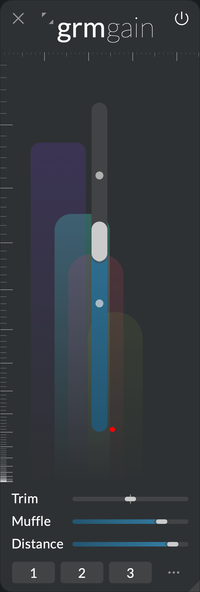

A volume fader. Or is it?
Gain

Gain is the big fader of a mixer's channel strip: a simple volume control... but that's not all! The big Gain slider not only controls the amplitude of the incoming audio, but also affect its tonal and temporal characteristics to simulate a sense of distance from the source to the listener. Adjusted with care and modulated with taste, it is able to quickly give a sense of depth, movement and presence to the elements of a mix, difficult to achieve otherwise.
Context
Before the advent of analog mixing boards, there was a single microphone at the center of the studio; musicians distributed in the room, and their distance to the microphone determined their loudness in the recording, but also the complex impression of "remoteness" we all intuitively know. Analog mixers reduced this natural set of cues to the bare minimum illusion: varying the gain of the signal. Yet, as sound has more distance to travel, it:
- arrives slightly later to the microphone,
- scatters and reverberate on the surfaces closeby, and
- sees its high-frequencies attenuated by the viscosity of air.
All these phenomena contribute to the illusion of distance allowing the listener to perceive a sound stage. Gain attempts to simply but effectively mimick these effects, giving you control over the remoteness of a source, not just its gain. And combined with the modulation system, it is a surprising generator of sonic spaces, realistic or otherwise.
Controls
All parameters have as many independently-modulatable instances as there are input/output channels.
- Gain: Controls the volume, and the amount of "distancing" effect. At 0dB (maximum value), the audio is unaffected. As Gain is lowered, the audio is attenuated and more-and-more affected by Muffle and Distance.
- Trim: Adjusts the input gain, before applying the effect of Gain.
- Muffle: As Gain is lowered, sublty scrapes off high frequency content, attenuating harshness just like air does. It works by applying a gentle (6 dB/oct) low-pass filter, with a cutoff frequency determined by Gain and the percentage of muffling chosen: at 0%, no filtering is ever applied; at 100%, the cutoff gets smaller quickly when Gain lowers.
- Distance: As Gain is lowered, introduce a small delay, simulating the speed of sound in air, and a subtle room-like reverberation, simulating reflections against closeby surfaces.
Tips and tricks
More natural fades
Choose a well-known sound source (a simple saw wave works well). Listen to a few "standard" fade-ins/fade-outs (Muffle and Distance at 0%), turning Gain up or down slowly. Then increase Muffle and/or Distance (say, 50% each), and listen to a few fades again. Notice the enhanced, more natural sense of distance in the second case.
Doppler effect
When Distance is >0%, moving Gain will modulate the speed-of-sound-simulating delay accordingly, as if the sound source was approaching/getting away from the listener. Just as in nature, you will perceive a slight change in pitch proportional to the speed at which Gain moves. This is the Doppler effect.
Agitating Gain
Instead of moving Gain by hand, try modulating it with an Agitation. Each channel having its own Gain parameter instance, they will be randomly modulated independently (see Modulations), giving rise to unpredictible and sometime surreal spatial movements; this is of course more dramatic the more channels are configured. Combine with Muffle or Distance to taste.